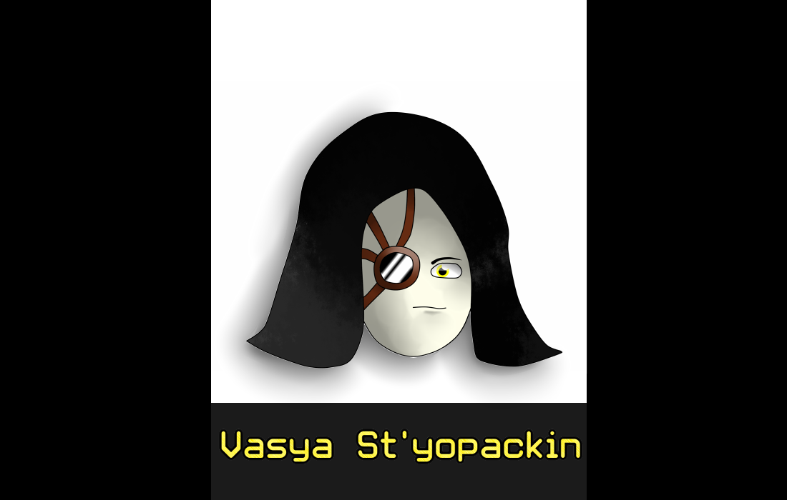

Pelmen Stories Flint And Steel (Вася Стьопачкин)
by
CRedMoon Team
Posted on June, 2020 at 18:53 PM
Про
История рассказывает про Эпичного-лирического героя по имени Василий-Стёпа, по фамилии Афанасьев. С которым происходят разные приключения и нове знакомства, всё с долей юмора, мол, как иначе?
Это небольшая история о Васе Стьопачкине и его друзях и странных путишествиях по древестным мирам и встречей странных [ЗЕЛЁНЫХ ЧЕЛОВЕЧКОВ]. Которые втягивают его в неприятности.
Глава I: Новый город
Жил-был ЛИРИЧЕСКИЙ герой, Василий-Стёпа по фамилии Афанасьев. По политическим причинам будем звать его Вася Стьопачкин. Он работал пилотом, летал долго и много, и он решил изменить свою жизнь.
Недавно основался новый город, и Вася Стьопачкин поехал в него на поезде, а то от самолётов у него уже кошмары снятся последний год. Город называеться Нев Сити (New City).
Он приехал в общежитие, а то, денег, как и поднятие зарплаты ждать, как выход Халф лайв 3. В общаге он встретил знакомого – ДьюВонга . Дювонг очень хорошо общался с Васей Стьопачкином ранее, на работе разгрузчика на всётом же аэропорте.
Дьювонг: «Привет, старый френд.» - сказал тот тогда.
Вася: «Эхх… Ты давно живёшь в Нев Сити?»
Дьювонг: «В полне да, уже года, как…» - Его перебил Вася.
Вася: «А я – четыре».
После этих слов Вася Стьопачкин положил свои вещи, взял телефон и пошёл за едой в «магазин харчових товарів ЄДА».
По пути он задумался над словами ДьюВонга, и не заметив дерева по пути сказал:
-«Что за дерево?» -сказал своим загадочным голосом Вася Стьопачкин.
«Откуда оно тут взялось??»- и в этот же момент из дупла дерева вылазит зелёный инопришленец.
«Hi, my frando!» - сказал странным голосом инопришленец.
«А, пришленцы… не, стоп, ПРИШЕЛЬ… нет, стоп, А! Инопране… нет… Щас, э-э, ПРИШЛЕНЦЫ!» - наконец, Вася Стьопачкин вспомнил нужное слово.
«АГА, РУССКИЙ ЧЕЛОВЕК, ТЫ ПОЙДЁШЬ СО МНОЙ» - сказал странник.
«Что, куда?» - после этих слов Васю Стьопачкина затянуло в дупло.
Глава II [ДЕРЕВО МУДРОСТИ]
Вася попал в странное место, похожим на лес, но всё состояло из деревьев. Пол, деревья и даже кусты были из крон деревьёв.
Вася шёл по тропинке из берёзы и нашёл [ДЕРЕВО МУДРОСТИ]. На верхушке стоял король брёвен и досок БОГ ДЕРЕВЬЕВ. Бог сказал Васе:
«Что ты тут забыл, человек?»
«Я честно хз, я тут что-то забыл, меня какой-то инопришленец сюда затянул, выпусти меня пожалуйста, тебе же не сложно?». – Сказал Василий.
«Никак нет, мисье,не не соизволите извиниться, А?» - Волскликнул Бог.
«За что я должен извиняться» - Василий непонел.
«За то, что вы не извинились ранее.» -[ДЕРЕВО МУДРОСТИ] сказало.
«Э-э, я сваливаю!» - Вася убежал обратно и прыгнул в дупло.
Он попал в мир берёз. Теперь всё состояло из берёз. Это место, похожим на берёзовый лес, но всё состояло из берёз. Пол, деревья и даже кусты были из крон берёз. Василий непонел дважды. Он пошел по тропе из клёна. И нашёл
[ДЕРЕВО МУДРОСТИ]. Он быстро вернулся и залез в дупло…
На этот раз он вернулся на свою улицу, и пошёл домой. Быстрым шагом.
Он быстро побежал в магазин, купил пельменей и побежал всё-таки домой. По пути он увидел Инопришленца снова, но тот быстро скрылся за домом.
Глава III Вася и его новая жизнь
Вася пришёл домой, в общежитие и пообедал с сожителями. Он узнал новых людей: Эндрю(Энд-род), Жиросиф (Жир), Франциск (Франк) и Каль «Дэ» младший (Каль).
Они обедали за столом в 4 часа дня и ели пельмени и с колой. Обед не лучший, но у Васи после поездки особо не было денег, и есть, что есть.
«У тебя какое-то непривычное имя для нашей страны» - Сказал Жиросиф.
«Да, - подметил ДьюВонг, - Тебе явно надо сменить его».
«Ну и что вы предлагаете?» - Вася без интереса спросил.
«Флинт! В честь сухариков, как раз такое имя существует!» - Сказал Жиросиф.
С этого момента жизнь Васи изменилась. Он стал новым человеком, с новым местом работы, с новым местом жительства и именем.
После обеда Вася и ДьюВонг отправилась к тому самому дереву, где Вася впервые повстречал Инопришленца. Шли они довольно долго, и пришли в поле ген увидели то самое дерево. Оно было большим и в нём было большое дупло, где что-то светилось.
Ребята подошли поближе, и разглядели внутри много [ЗЕЛЁНЫХ ЧЕЛОВЧКОВ], кажется, их было пятеро. Вася и ДьюВонгом поинтересовались, мол, что тут происходит? Но ответа не последовало, ведь они праздновали
что-то, и они праздовали это что-то очень шумно.
Наконец, [ЗЕЛЁНЫЕ ЧЕЛОВЕЧКИ] заметили Васю и выключили музыку, они рассказали им, что [ЗЕЛЁНЫЕ ЧЕЛОВЕЧКИ] празднуют день танца в этот день и на их планете все так делают. Ребятам показалось это странным, но интерес не пропадал… Они встретили ещё много разных пришельцев внутри, и зашли к ним «погостевать».

О блогере

Кроль Милан
Разработчик инди-игр, а также создатель комиксов серии "PELMEN Stories"